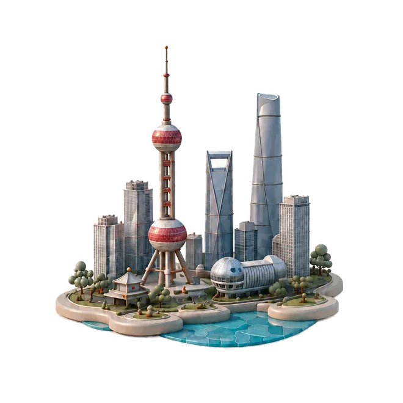
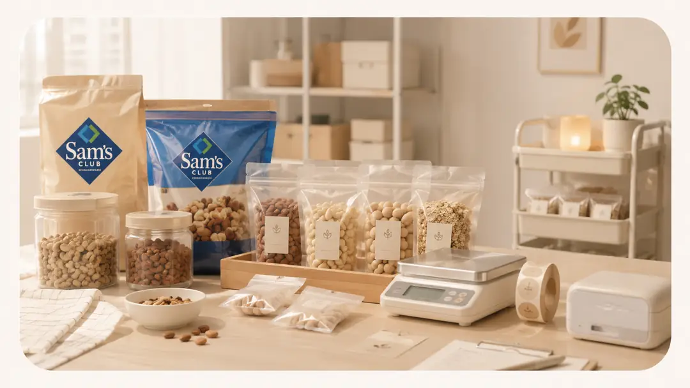

Fang Yingxi
方颖曦
Yingxi Fang
Yingxi Fang
/ 关于我
我希望成为一个懂 AI 产品、能拆客户需求、也能推动方案成交的人。
我关注 AI Agent、AIGC 内容生成、智能问答与数据结构化，曾在安悦科技、蓝标集团、汽车之家、携程等真实业务场景中，参与海外网文 Agent、广告生成、直播问答和内容结构化项目。
这些经历让我不只理解 AI 能做什么，也更关心它如何被客户理解、被业务采用、被市场验证。我希望把 AI 能力转化成清晰的客户话术、解决方案和商业价值。
我有轻创业和线下销售验证经历，做过需求洞察、产品包装、定价销售、交付履约和用户反馈闭环。未来希望进入 AI 产品销售、解决方案销售或 AI SaaS 商务拓展方向，持续提升销售转化能力。
在不同的平台与团队中，我逐步把产品理解、AI 应用与业务思维连接起来。
每一段经历，都让我更接近“能把想法落地、也能理解市场”的自己。

上海 · SH
北京 · BJ
上海 · SH
广州 · GZ
AI、Agent 与产品实践项目
面向抖音美妆/服饰广告，搭建从爆款解析到脚本生成、素材上传、自动剪辑的 AI Agent 短视频生产系统。
面向音乐教师备课低效、内容结构重复的问题，设计垂直场景 AI 教案生成 Agent。
面向企业财务分析与投资研究场景，构建现金流、商业模式和风险指标分析 Agent。
两个从 0 到 1 的尝试。

点击查看详情 →从校园学生的性价比需求出发，把山姆大包装商品拆解成可购买、可配送、可复购的小份零售服务。
抓住跨年仪式感和商圈拍照需求，设计“气球 + 拍照 + 社交种草”的节点营销小项目。